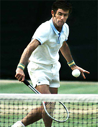
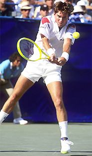
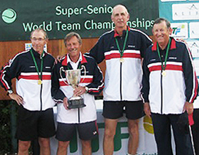
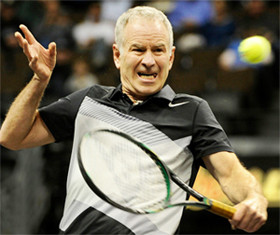
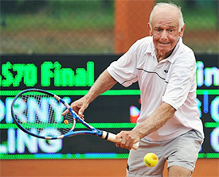

Previous: Neutral Tennis - The Key to Offense and Defense | 🏠 Classic Lessons Home | Next: One Hand Backhand
On Your Mark, Get Set, Go Slow
Rob Heckelman

Ken Rosewall reached the U.S. Open final in 1974 at the age of 40.
It's 1974 at Forest Hills and an aging Ken Rosewall is on center court playing for his third championship eighteen years later after his first win. He's up against a new young stud, who hits groundstrokes like never before.
The age discrepancy is highlighted by the fact that this young challenger, Jimmy Connors was born, September 6, 1952, the same week Ken played in his first U.S. Championship event at Forest Hills reaching the quarterfinals at 17 years of age. It becomes a lopsided final, but nonetheless, the crowd before, during and after the match endears themselves to the modest Australian, not because he is the underdog, but because he is nearly 40 years old.
Ironically, nearly 20 years later the shoe is on the other foot and it's a young Jimmy Connors who is nearly 40 years of age and putting together a run up to the semi-finals, a run that might be one of the most memorable weeks in tennis history. Again, a senior player steals the show and endears the hearts and minds of the tennis world.
There is a definite affinity for athletes performing well after their prime from sports fans worldwide. The reason is simple, most of the audience can relate, because most of the audience is either the same age or slightly older.

20 years later, Jimmy Connors was the senior player crowds cheered.
We all enjoy seeing these seasoned athletes get another shot at winning the big one. We dream we could do the same.
We take that dream to the tennis courts and give it our best shot. What draws us to the television to watch these elder heroes is the same that drives us to compete late into our lives. The level may be world's apart, but I dare say for some the intensity level can be the same as the juniors, the collegians, or even, yes, the pros.
Everyone loves a chance for a do-over, a fresh start, a chance to erase the past and begin new. That's what senior tennis provides, and because the age groups are measured by five year intervals, we get a do-over every five years according to the USTA and ITF age groups.
The original senior tennis tournaments were for players over the age of 45 and was referred to as “Veterans.” As life expectancies grew, so did the age groups, initially in leaps of every ten years and then eventually every five years.
But as age groups were added the label of seniors stuck. Today we have senior divisions starting at 30 years plus and moving up in integrals of five years all the way to the 90's. Today's 60 is yesterdays 40, and in the tennis world we have taken advantage of that extended aging opportunity all the way up to the 90 and over.
The fact is that the tennis explosion of the early 70's means that a very large proportion of today's tennis population being 50 plus in years. As a result, there is a great need to address this sector of players separately, taking a more catered to approach to the advancement of their games.
Seniors can play their own version of world class tennis into their 90s.
In these articles, we will delve into the many unique characteristics of senior tennis and find a more entertaining way of practicing and playing the sport. Realizing that time is precious, we will approach the sport with an emphasis on getting changes to happen quickly and enjoying those changes as they take place.
As part of this we will provide numerous new games and drills to enjoy competitive practice and to help create progressive change. This decision to add new types of playing drills and games is based on working for years and years with actual senior players.
It's about having fun while improving, and let's face it, games are more fun than drills. That's a common thread for all levels and ages and here we will tailor that approach to maximizing your development as a senior player.

The senior tour provides players with opportunities to compete worldwide.
The entire senior tournament circuit opened up a brand new competitive world for both the warriors of the courts that have stroked their way through the many age groups and an opportunity for many players to play competitively against a foe with equal physical skills. Also, now the player across the net has the same amount of wear and tear on the body.
As much as it may be fun on occasion for seniors to play with quicker and harder hitting younger athletes, it isn't much fun to compete with them on a steady diet. Not only can it result in a lopsided match that's no fun for either player, but it also can be physically stressful.
With new technology the younger and stronger players can hit serves and ground strokes so much harder that someone without the ability to react in time might hit late or mishit the ball resulting in an injury. If a 60 year old player is at net against a heavy hard hitting topspin 20 year old, the task can quickly transform from a volleying agenda to a dodge ball event.

Senior tennis often involves more net play and artful angles.
But, when the age, physicality, and abilities are similar, it is more likely to become a more artful contest which can turn into a wonderful match up. New and creative strategies develop, like the net player who tries to execute an approach shot to create a more predictable return, instead of just putting a short ball away as the top pros on tour do.
On the other side of the net, the baseline player might look to finesse a shot that will compromise the player at net, rather than overwhelm his opponent with a ripping passing shot. The net player will use more touch volleys, capitalizing on the angles available at net.
He may hit a very short volley down the middle to force an error, a shot that in Open tennis will likely lose you the point. The baseline player will blend short chip shots to the feet with deft lobs over the net persons head, just out of their reach. The entire game becomes more focused on control and variety, less on power and speed.
Senior tennis also provides the opportunities for incredible world travel.
The other exciting prospect to senior tennis is the potential for world travel. Visit the ITF website, www.itf.com, and look up the senior schedule. It will fascinate you when you discover that there are senior tournaments all over the world. The U.S.T.A. also has a vast and complete package of senior events year around all across the country. It could be said that with senior tennis, you have at your disposal an international language that is perfect for enhancing your social environment.
If you plan on taking a few lessons, maybe instead of your local young pro, try finding an experienced teaching pro that has a better understanding of you and what you are capable of doing on the court. You may find that you will only want to modify your game or simply enhance your current style of play.
Stay open minded about change. Pick one subject and try to master that one small modification. As an example, you feel your second serve needs to be deeper and maybe have a little more kick. Work on that and record your progress. Take your time so that you can establish a trend of change that meets your standards. Maybe it takes a month, or a couple of months, no hurry, making this one change will teach you how to be successful at such transitions in the future.

Discover the thrill of an improved volley grip.
If you feel your game has an obvious flaw, make the change cold turkey and don't hesitate to reinvent that portion of your play. As an example, you feel your net play is weak due to the incorrect grip you use when you volley.
Make the change, practice the new style until it becomes a natural part of your competitive game. You will know when that happens because you will no longer be thinking about how to hold the racket and volley, it will just happen naturally.
Once again, if you can be patient and work through this change, this transition will make any other changes much easier in your future. Part of what makes senior tennis so much fun is the feeling that you are still improving and working on your game.
Any successful progress through change is rewarding in both on court play and your frame of mind. The day you come to net in a competitive match and win a crucial point with that new grip, is a day that you will enjoy and remember for some time.
 |
Rod Heckelman has been the general manager of the famed Mt. Tam Racquet Club in Marin County, California for the last 30 years. He was formerly the youngest head pro at the John Gardner Tennis Ranch in Scottsdale, Arizona, and has been ranked numerous times in Northern California seniors play. He is the author of a book on senior tennis, called “Playing Into the Sunset” as well as the “Business Handbook for Tennis Pros.” In addition to his reputation as an outstanding teacher and coach, Rod speaks widely within the tennis industry on all aspects of instruction and club management. |
Previous: Neutral Tennis - The Key to Offense and Defense | 🏠 Classic Lessons Home | Next: One Hand Backhand